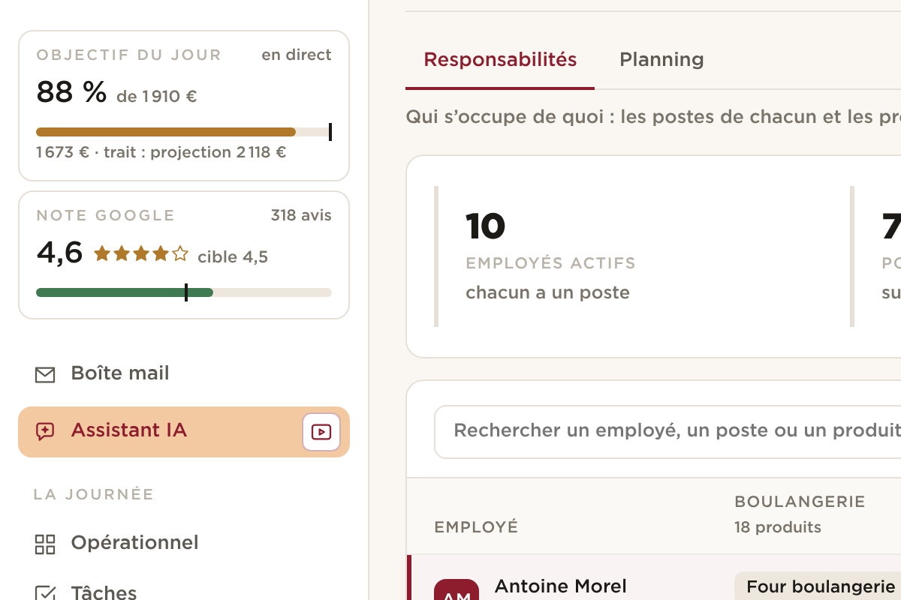
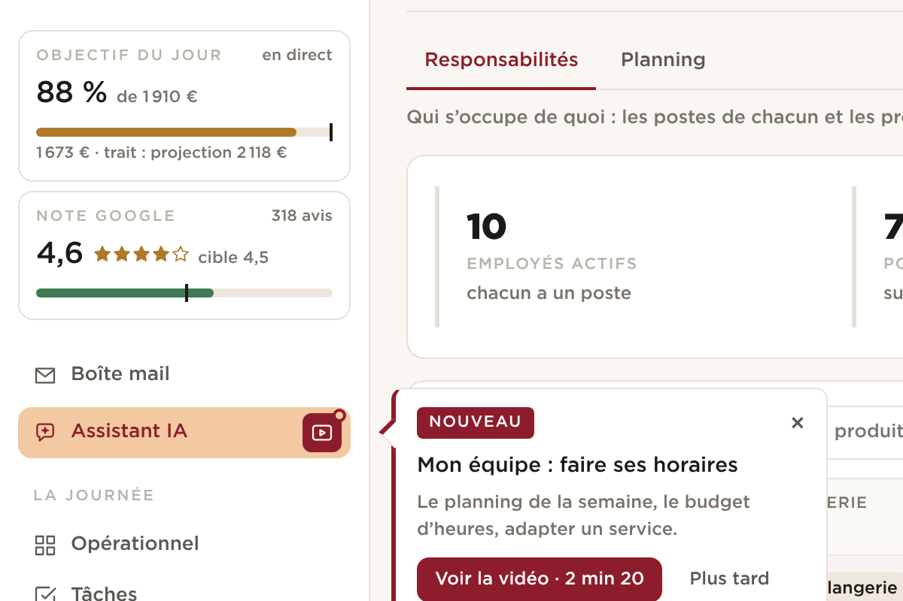
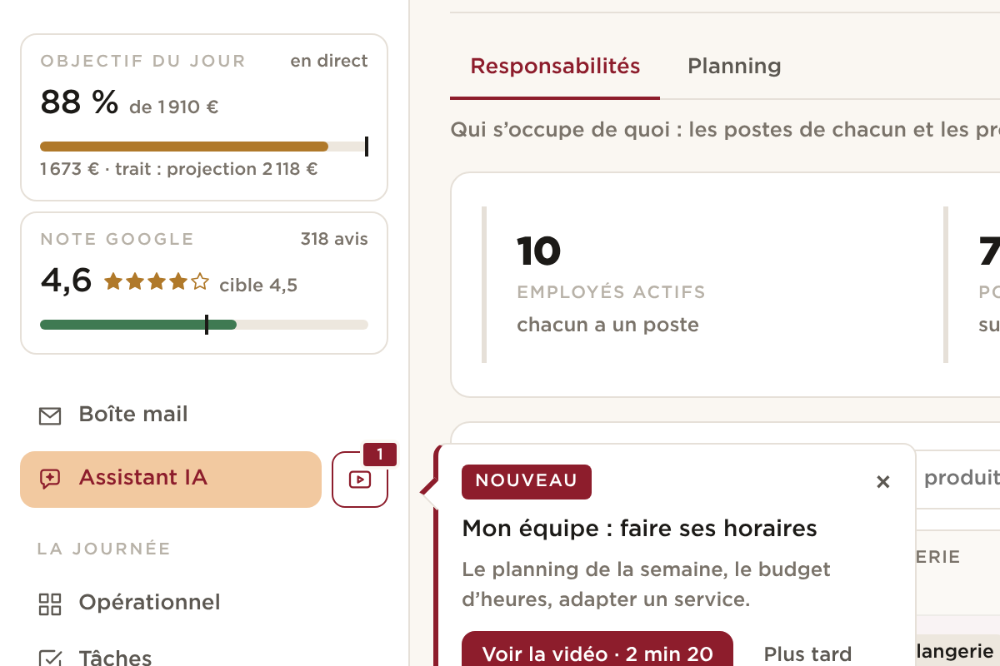
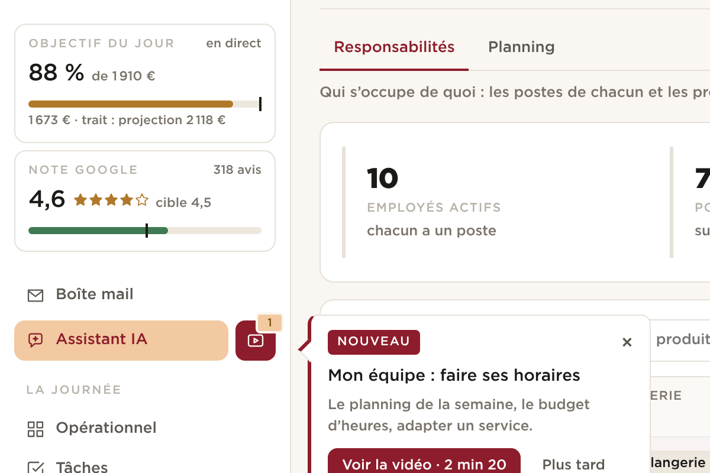
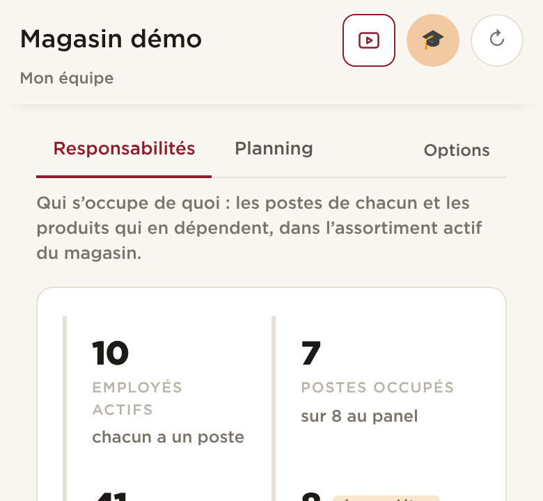
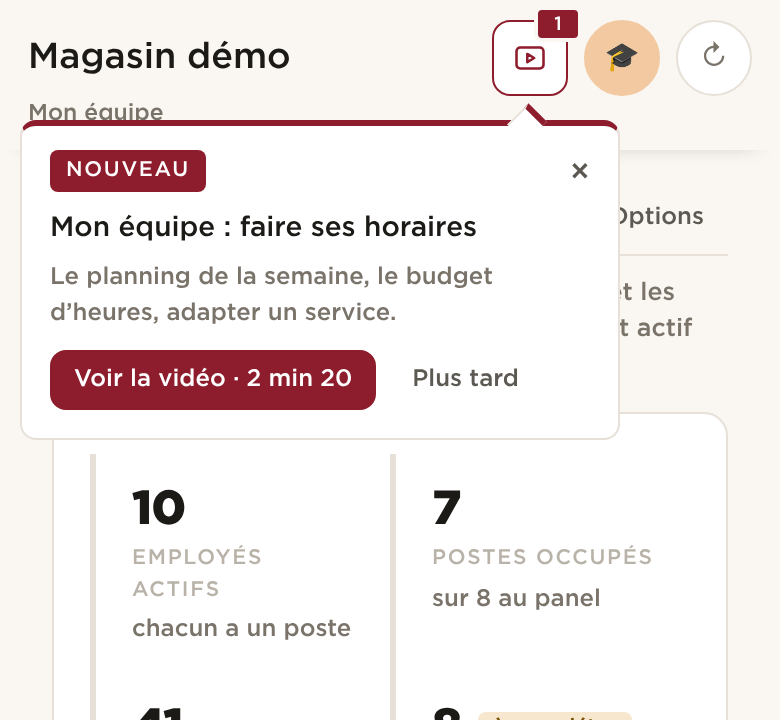

Dashboard magasin · maquette
23/11/2026
23/11/2026
Trois positions. En haut : au repos. En bas : une nouvelle fonction à voir, annoncée par une bulle accrochée au carré (elle remplace la carte en bas à droite).
Le carré est posé dans la ligne d’Assistant IA, à droite (votre croquis). Le plus discret ; la ligne garde toute sa largeur. Nouvelle vidéo : le carré passe en Ruby, un point Abricot.


Un carré séparé, même hauteur que la ligne, blanc bordé comme les boutons du système. Nouvelle vidéo : bord Ruby et le nombre de vidéos à voir.

Le même carré séparé, dans l’Abricot d’Assistant IA : les deux aides vont ensemble. Nouvelle vidéo : le carré passe en Ruby avec le nombre à voir.

Le rail n’existe pas au téléphone : le carré va dans l’en-tête, à côté du dossier de formation.

La même bulle, sous le carré.

Un clic sur le carré ouvre le lecteur actuel (la vidéo de la page, puis les autres). « Plus tard » ferme la bulle ; elle ne revient pas pour cette vidéo. Le carré reste visible sur chaque page, même quand la page n’a pas sa propre vidéo : il ouvre alors la liste de toutes les vidéos.